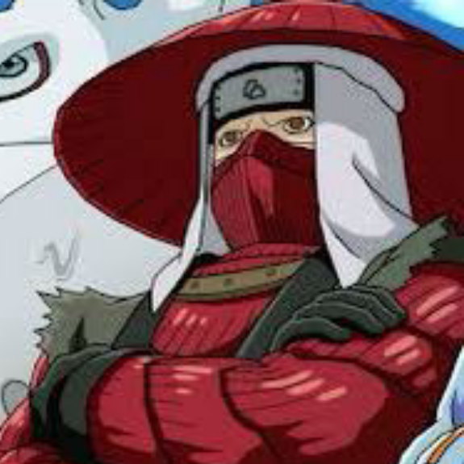

-
GAARA
O quinto kazekage de suna e o jinchuuriki da 1 cauda, na serie clássica é um dos mais perigosos, Gaara passou por inúmeros problemas desde muito jovem. Isso afetou diretamente seu senso de certo e errado, amor e ódio, o fazendo crescer como um verdadeiro monstro.
-
YUGITO NII

jinchuuriki do Duas-Caudas da Aldeia Oculta da Nuvem. Yugito foi designada como jinchuuriki da Duas-Caudas aos dois anos de idade. Ela era uma kunoichi muito poderosa e qualificada, com uma certa habilidade estratégica, e foi capaz de controlar a sua transformação em sua Bijuu à vontade.
-
YAGURA KARATACHI
Yagura Karatachi foi o jinchuuriki do bijuu de três caudas. Ele foi o Quarto Mizukage de sua vila. Foi capaz de lutar simultaneamente contra Itachi e Jūzō, dois membros da Akatsuki, sendo do estilo e era capaz de incorporar o final do gancho maior de seu bastão em seu ninjutsu de Estilo Água
-
ROSHI
Foi o jinchuuriki do Quatro Caudas. Ele deixou a Vila Oculta da Pedra para controlar o poder do Bijuu. Roshi foi o jinchuuriki do Quatro Caudas desde criança.e conseguiu fundir as naturezas do fogo e da terra, criando o Youton (lava).
-
HAN
Jinchuuriki da cinco caudas. Han é homem de mentalidade viva e direta, sendo muito sociável e amigável, tem o hábito de deixar a mão direita dentro de seu quimono. Han era um homem bastante alto, visto como o maior jinchuuriki fisicamente e também fora fortemente blindado.
-
UTAKATA
Ninja renegado de Kirigakure e jinchuuriki de Saiken, o Seis-Caudas. Utakata foi derrotado pelos Seis Caminhos de Pain e morreu quando teve a Besta extraída pela Akatsuki. Após sua reanimação Saiken foi selado dentro dele.
-
FU
Foi uma kunoichi de Takigakure e foi a jinchuuriki do Nanabi(7 caudas). Ela é mostrada sendo uma criadora de problemas. Fu também parece ficar facilmente entediada e muito amigável e ansiosa para fazer amigos.
-
KILLER BEE
Shinobi de Kumogakure. Ele é o jinchuuriki da oito caudas. Apesar de ser responsável pela proteção da vila, B deseja ser o maior rapper do mundo, criando rimas no meio das suas batalhas. Killer B tem muito orgulho de seu próprio poder e também muito orgulhoso de si mesmo podendo ser muito arrogante e teimoso.
-
NARUTO UZUMAKI
Sétimo Hokage de Konoha. Desde seu nascimento, ele se tornou jinchuuriki das Nove-Caudas, um destino que o levou a ser odiado por toda a aldeia durante sua infância, ganhando respeito da aldeia ao passar dos anos conseguiu ser reconhecido por todos e conguindo realizar o seu sonho.